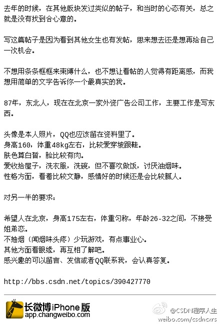

好建议，会是CSDN上广大男性程序员的福利。//@八爪李炯明: 曾经对此提过建议：CSDN与世纪佳缘，百合网等能够Open ID登陆！这是刚性需求呀！ //@Ada李力:专门注册帐号到CSDN找程序员男朋友的妹子，一定要鼓励啊。@随手拍解救大龄女青年@CSDN程序人生:在北京的单身程序员注意啦，这里有一个广告界的妹子，希望找一名程序员 老公，之前我也看过妹子的发帖，非常有诚意！机不可失失不再来...网页链接 